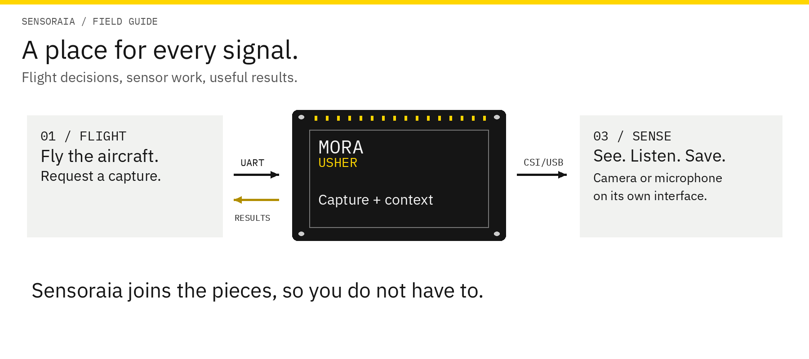
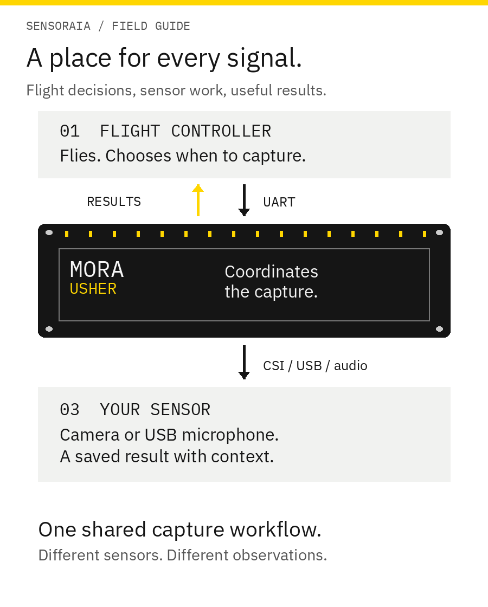
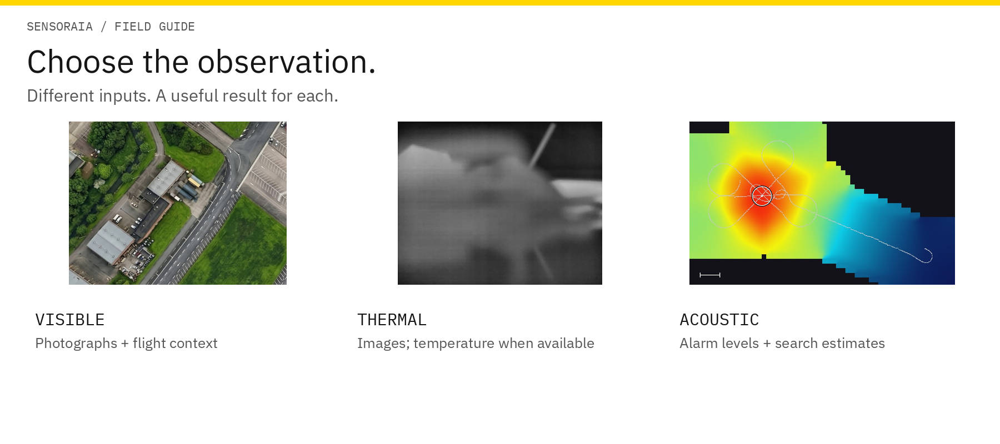
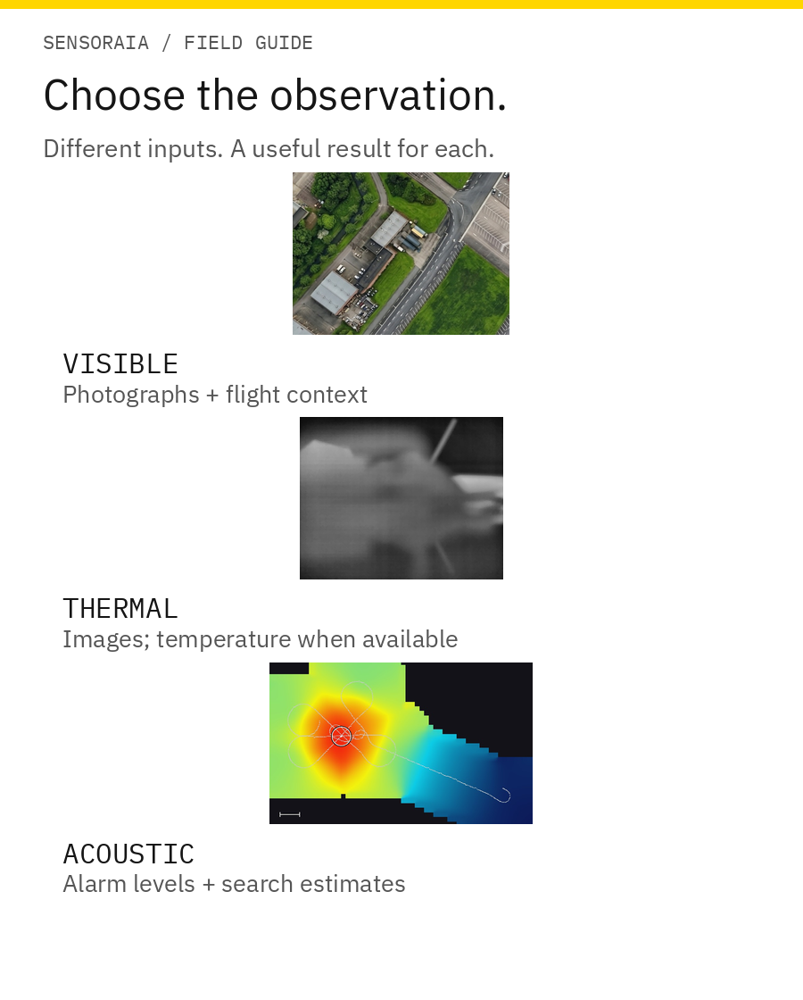
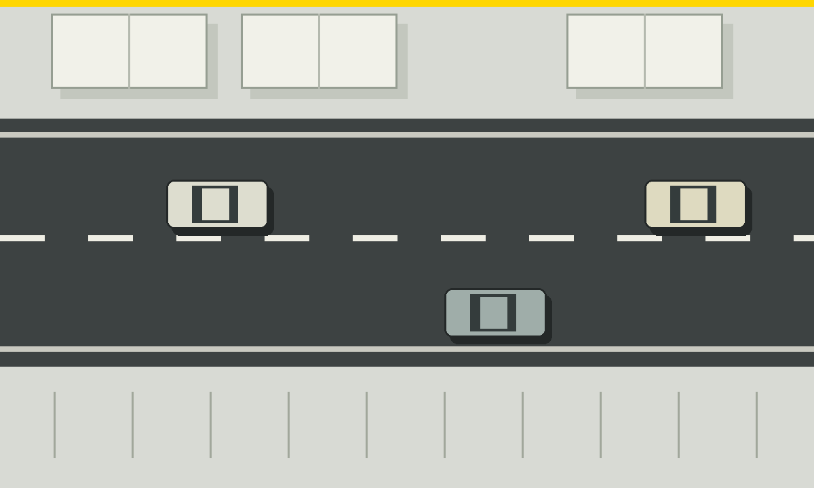

What Is Sensoraia?¶
Sensoraia is an AI-enabled, in-flight sensing suite for connecting cameras, microphones and supported processing to an aircraft's onboard computer. It takes care of requesting captures, saving the results and keeping the available flight information with them. It also connects live sensor processing back to the flight: MORA can exchange data with the airborne aircraft while the mission is running, not just collect files for you to inspect after landing. The result is more useful than a folder of photographs whose story you have to reconstruct afterwards.
You might use it to look for vehicles with a neural network, listen for an alarm, inspect thermal observations, or feed supported live results into the next flight-plan decision. You choose the sensors and the job; Sensoraia provides a shared way to connect them to the flight.
New to the names? The Sensoraia glossary explains the shared vocabulary and each module's terms.
I Just want the code¶
So in a hurry huh? Just want the code, find all sourcecode on github. But advised is to read the getting started page before you confuse yourself.
Why Use It?¶
Spend Less Time Joining The Pieces¶
A sensor, an AI model, an autopilot and an onboard computer do not automatically agree on when to observe, how to process the result or which flight position belongs to it. Sensoraia handles the shared coordination, so supported modules can concentrate on their sensing and processing jobs.
Keep The Context, Not Just The Picture¶
A photograph becomes much more useful when you can relate it to the aircraft's position, attitude and capture request. Sensoraia records the available context in image metadata and reports what completed. When timing or calibration is uncertain, it keeps that distinction visible rather than turning an estimate into a promise.
Explore Before You Connect Hardware¶
Run the suite on a Linux PC with a simulated aircraft and camera views made from cached aerial imagery. Follow a request through capture, processing and supported mission results, then move to your real onboard computer and sensors. Your first experiment does not need a flying aircraft. The propeller is welcome to sit this one out.
The Same Application Code, Simulated Or Airborne¶
Local simulation runs the same production application source code as the software built for MORA, not a separate demonstration reimplementation. The simulated aircraft and camera inputs stand in for physical hardware; the capture coordination, processing and result-handling code remain the application you are preparing to deploy.
The PC and ARM64 executables are different builds, and real sensors have their own drivers, timing and calibration. Simulation lets you exercise the application workflow before making those hardware connections.
Let Your PC Do The Heavy Lifting¶
Use the cores on your PC to build in parallel, including cross-compiling
the ARM64 applications for MORA. You do not need to wait for the small
companion board to compile its own software or install a development
toolchain there: build on the fast machine, deploy the ready-to-run binaries,
and keep MORA focused on sensing and processing. The build instructions use
make -j"$(nproc)" to use your PC's available CPU cores.
A Live Conversation With The Aircraft¶
During flight, the controller sends pose information and capture requests to MORA. USHER coordinates the sensor work and returns supported completion or target-point results. A compatible flight plan can use fresh results to update a waypoint, follow a returned point or choose its next mission action. The flight controller remains responsible for flying the aircraft.
This is live, real-time interaction while flying: sensing, supported processing and mission decisions can happen during the flight, without waiting for a post-flight download. Actual update rates depend on the sensor, model and available computing resources; live operation is not a guarantee of hard real-time deadlines.
Neural Networks Can Take Part In The Flight¶
Neural-network processing is not limited to an offline report. Spottercam produces vehicle detections from the IMX500 during capture. Its built-in output is image detections and metadata; geographic target publishing for flight response is an additional integration step. Diplacam's experimental neural planner can return XY points that the supplied rotorcraft flight plan follows and refreshes in simulation. With the appropriate result interface and flight-plan logic, observations can therefore influence mission behavior while the aircraft is airborne.
You decide which results the flight plan may act on. A detection alone does not command a maneuver, and a network does not take over the motors. Each module's guide explains what it currently returns and its qualification limits; Diplacam is experimental, and LOOM's guarded return-vector integration awaits its trained homing model and physical accuracy validation.
How The Hardware Fits Together¶


Think of it as three parts with different jobs:
- The flight controller flies the aircraft. Your flight plan or operator requests a capture at the appropriate moment.
- MORA carries the sensor software. MORA is the aircraft's companion- computer role, not a particular board. Sensoraia uses the Raspberry Pi Zero 2 W as its initial, resource-constrained reference platform; another suitable compute board can fill the role. It connects to the flight controller over UART and to cameras or microphones through their own interfaces.
- USHER coordinates the work. USHER is Sensoraia's service on MORA: it receives the request, works with the selected sensor, saves the result with its context, and sends completion or supported target results back to the flight controller. The connection works in both directions.
Sensoraia is the whole suite, MORA is the computer, and USHER is the coordinating service. Three names, not three things you must learn before you can take a picture.
The current ready-made ARM64 build, package and setup instructions target 64-bit Raspberry Pi OS Trixie on the Pi Zero 2 W. That is a starting point, not a hardware lock-in: other Linux compute boards can run Sensoraia when their architecture, OS libraries, sensor drivers, interfaces and available resources are supported or adapted. They need a matching build and deployment configuration; Pi-specific instructions do not automatically apply.
Paparazzi examples connect this workflow to simulated and real flight controllers. You can also run individual sensor tools from a terminal. You do not need every sensor or every module to make a useful setup.
What Could You Do With It?¶


Search for vehicles with live AI. Spottercam runs a compatible trained vehicle network on the IMX500, keeping its detections tied to captured images. Use the results for live review and recording; add a qualified geographic-target integration when your mission should act on a location.
Respond to supported observations in flight. Feed fresh target or planner results into compatible flight-plan logic: update a waypoint, follow up an observation or choose a mission branch. Each backend defines what it returns; the flight controller retains navigation and control.
Listen while you fly. EARcam detects an alarm tone and combines useful sound readings from different positions into an acoustic search estimate.
Explore thermal targets. Save thermal images, examine supported temperature samples and regions, and use measured lens/mounting calibration when projecting thermal observations onto the ground. A warm patch is a candidate, not an automatic identification of a particular object.
Add the sensor your mission needs. The architecture separates sensor adapters, processing and the flight-controller protocol. That gives developers a place to integrate a gas, particle or radiation sensor and define the result a mission may use. These are extension examples, not built-in Geiger, gas or particle drivers; new sensors need an adapter and an agreed data/result contract. It is extensible, not a universal plug-and-play driver collection.
Try a new idea without changing the flight interface. Use the local simulation with the same production application source, then connect MORA and the actual sensor. Check both your result handling and the physical sensor's behavior before relying on the combination.
Build better datasets and keep useful evidence. Original photographs, metadata and permitted MIMIC imagery can support external model training and evaluation. PANGEA maps and tiles can help with scene selection and annotation context; they are an additional tool, not the main mission. Training still needs suitable labels, imagery rights and independent evaluation, and camera-view models need representative camera-view inputs.
Keep conventional capture alongside AI. Use supported visible-light and thermal cameras for ordinary photographs too. You choose where inference adds value instead of making every capture depend on a model.
These are options, not a checklist. A dependable setup with one sensor is a perfectly good place to begin.
Start Small, Grow Deliberately¶
If you are curious, explore the example below. If you already have a sensor in mind, choose its guide next. When you are ready to try it yourself, the installation guide walks you through a PC build, a local simulation and deployment to MORA.
Sensoraia helps you collect and interpret observations; it is not a flight controller or certified navigation, rescue or measurement system. Real-world accuracy depends on your sensors, calibration and timing. The guides explain those limits where they matter, so you can make informed choices as you go.
IN-FLIGHT / LIVE AI DETECT AND RESPOND
Find a vehicle. Follow up in flight.


03 / RESPOND THROUGH YOUR MISSION. A compatible flight plan can follow up a fresh valid target, for example by entering a target orbit. Spottercam already supplies live image detections; converting those boxes into geographic target results requires additional integration.
TAKE THE NEXT STEP AT YOUR OWN PACE